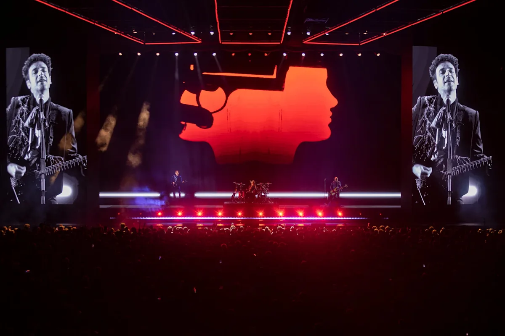
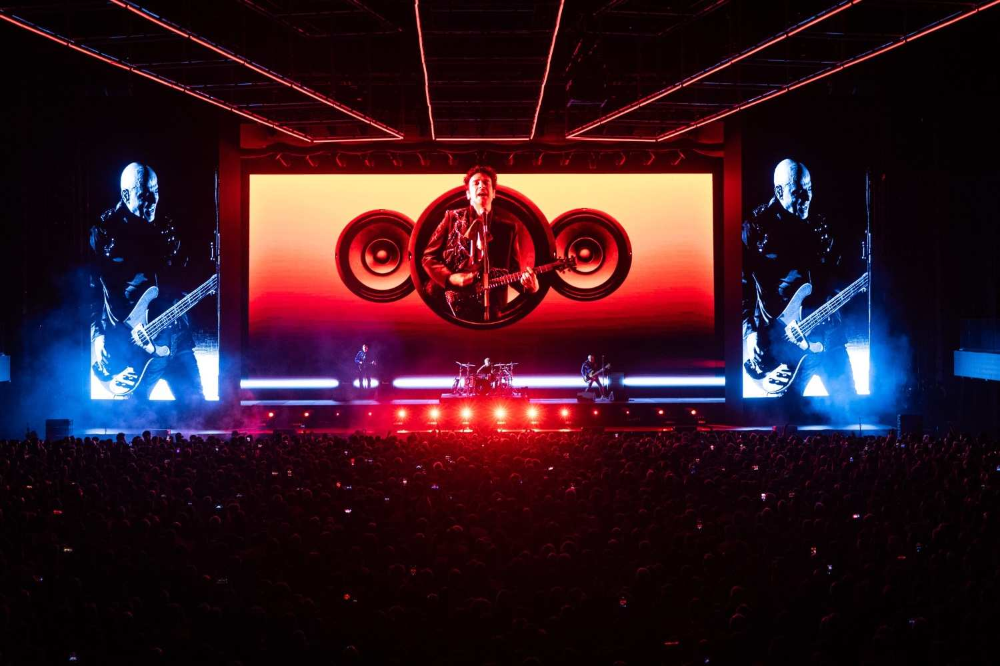

Fuerza Natural
Gustavo Cerati
2009
2009

1990

2006
Netflix anuncia un documental con acceso a su mundo íntimo e imágenes inéditas.

Por qué es un gran espectáculo y qué opina el público del emotivo recital.

Así fue el regreso con tecnología de Soda Stereo.